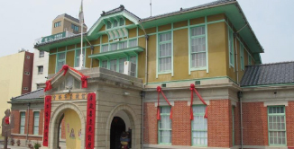
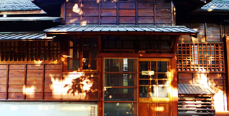

【雲林布袋戲館】
雲林縣是布袋戲的故鄉，提到布袋戲， 就要談到布袋戲大師"黃海岱"創立五洲園，演出 多部膾炙人口的布袋戲。尤其一手創立的"雲州大儒俠- 史艷文"更是紅片大街小巷，布袋戲館除實物展示外，更期望 利用現代科技，將偶戲精美之處展示推廣。
雲林縣虎尾鎮林森路一段498號 TEL:05-6313080 營業時間：上午10點～下午6點(週一、二休館)
【雲林故事館】
雲林故事館是日治時期興建的官舍，目前已列為歷史建築；現改為雲林故事館，以做為地方說故事、辦演講的地點，也推廣虎尾的毛巾產業，並舉辦親子毛巾偶創作研習，未來也將繼續鼓勵社區居民創作，讓外界認識虎尾人在地生活。
雲林縣虎尾鎮林森路一段528號 TEL:05-6311436 營業時間：上午10點～下午6點(週一、二休館)
【頂溪朵朵-貓繪村】
草根藝術季結合頂溪社區為軸出版的繪本在"屋頂上的貓"為創作靈感，在其將平面延伸至實體雕塑與3D立體畫，讓"貓"可愛有趣的造型真的現身在公園及社區，生活空間裡與訪客產生互動，將"貓"的頑皮、慵懶、自在、獨立的多變性格，自二維空間躍出像是一朵朵捉摸不定的雲朵，躲在公園各處等你來驚豔!!
雲林縣虎尾鎮光復路2號 TEL:05-633-6728 營業時間：上午10點～下午6點 (備有車位)
【剪紙藝術村】

虎尾鎮公所指導，藝術家鄭元東帶領虎尾科技大學學生進行社區藝術創作"北溪里剪紙藝術"社區意象，共同創作以溪北里一段長達500公尺近100戶之外牆彩繪，以紅白色傳統剪紙為主軸，採喜慶圖案為主，紅色的剪紙彩繪充滿喜氣，藉創作喚起社區意識共同努力，現成為全台遊客慕名前來漫遊拍照的好所在。
雲林虎尾鎮北溪里北溪29號 營業時間：露天景點 (路邊停車)
【iicake雲林蛋糕毛巾咖啡館】
為促進台灣毛巾特色與品牌發展，建立產業聚落永續發展的根據地，"iicake"期望透過咖啡館之藝文型態與全台灣最大的 MIT毛巾市集，整合推出以毛巾為主題的多元化創新服務，讓遊客深度體驗，以提昇傳統產業最大附加價值。
雲林縣虎尾鎮光復路2號 TEL:05-633-6728 營業時間：上午10點～下午6點 (備有車位)